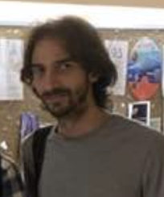
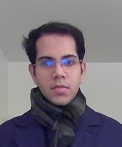

Past
and current Ph.D. students
This page is dedicated to my past and present Ph.D. students. I have
been incredibly fortunate to have had the opportunity to advise so
many wonderful students. Their accomplishments are due to their
talents and effort. I am just happy to have had the opportunity to
assist them within the confines of my limited abilities.
I am in the process of creating a link for each graduate student
containing a short description of how I met them or an interesting
moment during their graduate studies. This will take a little while,
but it will happen!
1) Georgiy
Arutunyants (Ph.D. 2006)
Georgiy got his Ph.D. from the University of Missouri in 2006 in
geometric measure theory and decided to seek a career in industry.
After a highly successful stint at SAS and Prognos Inc, George is
now the senior director of analytics at Parker Avery.
2) Derrick Hart (Ph.D.
2008)
Derrick got his Ph.D from the University of Missouri in 2008 in
additive combinatorics and worked as a postdoc at Rutgers and Kansas
State before moving into software engineering in the Kansas City
area.
3) Doowon Koh
(Ph.D. 2008)
Doowon Koh got his Ph.D. from the University of Missouri in 2008 in
harmonic analysis and analytic number theory. He is now a Professor
of Mathematics at Chungbuk University in Korea. Doowon has graduated
two Ph.D. students of his own.
4) Jeremy Chapman
(Ph.D. 2010)
Jeremy got his Ph.D. from the university of Missouri in 2010 in
geometric combinatorics. He is now a Professor of Mathematics at
Lyons College in Arkansas.
5) Le Anh Vinh
(Ph.D. 2010) (co-adivsed with Noam Elkies)
Vinh got his Ph.D. from Harvard in 2010 in combinatorics. He is now
a Professor of Mathematics at VNIES in Hanoi, Vietnam.

6) David Covert
(Ph.D. 2011)
David got his Ph.D. from the University of Missouri in 2011 in
number theory and combinatorics. He is now an Associate Professor of
Mathematics at UMSL in St. Louis, Missouri. David has co-advised a
Ph.D. student with my colleague Jonathan Pakianathan.
7) Steven Senger
(Ph.D. 2011)
David got his Ph.D. from the University of Missouri in 2011 in
harmonic analysis and combinatorics. He is now an Associate
Professor of Mathematics at Missouri State University.
8) Krystal Taylor
(Ph.D. 2012)
Krystal got her Ph.D. at the University of Rochester in 2012 in
harmonic analysis. She is now an Associate Professor of Mathematics
at Ohio State University. Krystal has recently graduated a Ph.D.
student of her own.
9) Esen Aksoy
(Ph.D. 2014) co-advised with Jon Pakianathan
Esen got her Ph.D. from the University of Rochester in 2014 in
number theory. She is now an instructor at Bilkent University in
Turkey.
10) Mike Bennett
(Ph.D. 2015)
Mike got his Ph.D. from the University of Rochester in 2015 in
geometric combinatorics. He is now a mathematics instructor in
upstate NY.
11) Dee Ethier
(Ph.D. 2016) co-advised with Jon Pakianathan
Dee got her Ph.D. in 2016 from the University of Rochester in 2016
in number theory. She is now a computer programmer in the Rochester
area.
12) Bochen Liu
(Ph.D. 2016)
Bochen got his Ph.D. from the University of Rochester in 2016 in
harmonic analysis. He is now an Assistant Professor of Mathematics
at Southern Chinese University.
13) Brendan Murphy
(Ph.D. 2016) co-advised with Jon Pakianathan
Brendan got his Ph.D. from the University of Rochester in 2016 in
number theory and combinatorics. He is now a postdoctoral researcher
at the University of Bristol.
14) Philipp
Birklbauer (Ph.D. 2019)
Philipp got his Ph.D. from the University of Rochester in 2016 in
number theory and combinatorics. He is now a computer programmer in
the Chicago area.
15) Nick Chatzikonstantinou (Ph.D. 2020) co-advised with Sevak
Mkrtchyan
Nick got his Ph.D. from the University of Rochester in 2016 in
harmonic analysis. He is now a postdoctoral researcher in Okinawa.

16) Alex McDonald (Ph.D. 2021)
Alex got his Ph.D. from the University of Rochester in 2021 in
harmonic analysis and combinatorics. He is now a postdoctoral
researcher at Ohio State University.
17) Jonathan Passant (Ph.D. 2021)
Jonathan got his Ph.D. from the University of Rochester in 2021 in
combinatorics. He is now a Heilbronn Postdoctoral Fellow at the
University of Bristol.
18) Brianna Vick (Ph.D. 2021) co-advised with Arjun
Krishnan
Brianna got her Ph.D. at the University of Rochester in 2021 in
harmonic analysis. She is now an Assistant Professor of Mathematics
at Clayton University in Atlanta.
19) Belmiro Galo (Ph.D. 2021)
Belmiro got his Ph.D. at the University of Rochester in 2021. He is
now a Visiting Assistant Professor at Colgate.
20) Gail Jardine (Ph.D. 2022)
Gail wrote a Ph.D. dissertation in geometric combinatorics. Her work
centered around the properties of the distance graph in vector
spaces over finite fields. Gail now works for a defense contractor
in the Washington D.C. metropolitan area.
21) Tingsong Jiang (Ph.D. 2022)
Tingsong's thesis is in geometric combinatorics. He was working on
configuration problems that combine different types of group actions
in the context of naturally arising hypergraphs.

22) Tritium Shen (Ph.D. 2022) co-advised with Sevak
Mkrtchyan
Tritium's thesis was on point configuration problems in fractal
subsets of Euclidean space. In particular, it is about dilates of
simplexes that are determined by subsets of sufficiently large
Hausdorff dimension. Tritium is now a data science intern in the
Houston area.
23) Shashank Chorge (Ph.D. 2023)
Donggeun is working in analytic number theory and learning theory.
His work is centered around derivatives the Riemann zeta function
and the Vapnik-Chervonenkis dimension of classes of indicator
functions of subsets of the integer lattice. Shashank has recently
accepted a postdoctoral position at the Indian Institute of
Technology.
24) Brian McDonald (Ph.D. 2023)
Brian is working in harmonic analysis and frame theory. His work is
centered around determining whether the L2 space associated with a
given measure does, or does not possess a frame of exponentials. He
has also done work in geometric combinatorics. Brian just accepted a
postdoctoral position at the University of Georgia.
25) Donggeun Ryou (Ph.D. 2024)
Donggeun Ryou is working in harmonic analysis, number theory and
probability. Donggeun's work is centered around the classical
Lambda_p problem and Bourgain's proof of the existence of
non-trivial Lambda_p sets of every possible order.
26) Firdavs Rakhmonov (Ph.D. 2024)
Firdavs is working in geometric analysis and geometric
combinatorics. In geometric analysis his work is centered around
the distribution of eigenvalues of the Laplacian on product
manifolds. In geometric combinatorics, his work is focused on
generalized configuration problems in vector spaces over finite
fields.
27) Pablo Bhowmick (Ph.D. 2026-expected)
Pablo is working on problems that involve connections geometric
combinatorics and learning theory. His work is centered around the
computation of the Vapnik-Chervonenkis dimension of classes of
classifier in modules over finite rings.

28) Shengze Duan (Ph.D. 2026-expected)
Shengze is working on Lp improving properties of operators on
fractal spaces with applications to partial differential equations
and configuration problems in geometric measure theory.
29) Hari Nathan (Ph.D. 2026-expected)
Hari is working on fractal structures in large data sets
30) Will Burstein (Ph.D. 2026-expected)
Will is working on problems in geometric combinatorics and pure and
applied data science

31) Anirudh Gurjale (Ph.D. 2024-expected)
Anirudh is working in number theory and combinatorics. His work is
centered around an algebraic geometric approach to Erdos type
problems in geometric combinatorics.

32) Quy Pham (Ph.D. 2027-expected)
Quy is working on Falconer type problems in geometric measure
theory with a probabilistic component.

33) Shantanu Deodhar (Ph.D. 2027-expected)
Shatanu is working on Fourier uncertainty principles and
connections with probability theory

34) Ella Yu (Ph.D. 2028-expected)
Ella is working on uncertainty principles in the discrete setting
and connections with combinatorial geometry
35) Zhihe Li (Ph.D. 2028-expected)
Zhihe is working on problems in harmonic analysis and geometric
measure theory.
Statistics:
Students in academia: 18/26 (69%)
Students in industry: 8/26 (31%)
Countries of origin: Azerbaijan (1), Austria (1), Brazil (1), China
(7), England (1), Greece (1), India (4), Korea (2), Takzhikistan
(1), Turkey (1), USA (14), Vietnam (2)